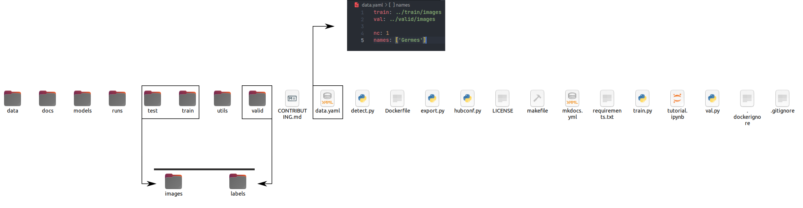

Welcome to the YOLOv5 documentation of ECCO project
How to use this project
Information
This project rely on the github repo yolov5 from ultralytics, please rely on its documentation for further explanations about yolov5.
Warning
This project has only been tested with Python 3.8.
A Docker image has been provided, see the Various configuration page for further details about the writing of the Dockerfile. The base image from this Dockerfile is a PyTorch image provided by NVidia, this has the advantage to not bother you with the installation of PyTorch, CUDA, CuDNN, and other optimization softwares needed to make PyTorch compatible with GPUs.
The shell commands needed to build and run the Docker container can be found below, they are also the provided in the makefile.
1 2 | |
1 2 | |
run_docker command : --mount type=bind,source=$(PWD)/runs,target=/usr/src/app/runs, this mounted volume is needed to get access to all the results :
- trained models,
- metrics,
- plots,
generated by the training loop.
Steps to use it
CRITICAL STEP
Before anything else, be sure to have installed Docker and Nvidia-Container-Toolkit.
Step 0 : Create annotations for an object detection task.
You first need to create labels for your object detection task. This can be done with the use of makesense.ai, once you have done the labellisation, be sure to export your labels to YOLO format, with one *.txt file per image (if no objects in image, no *.txt file is required).
The *.txt files (generated by Makesense) specifications are:
- One row per object
- Each row is class x_center y_center width height format.
- Box coordinates must be in normalized xywh format (from 0 - 1). If your boxes are in pixels, divide
x_centerandwidthby image width, andy_centerandheightby image height. - Class numbers are zero-indexed (start from 0).
Exemple
Here, the class 0 stands for Germes.
1 2 3 4 5 6 7 8 9 10 11 12 13 14 15 16 17 18 19 20 21 22 | |
Step 1 : Create train, validation, and test datasets and put the images and annotations files in the right folder
Organize your train, test and val images and labels according to the example below.

Each train, test, and valid directory hasve to have the same architecture :
- One directory
imagescontaining the images, - One directory
labelscontaining the corresponding*.txtfiles.
To inform the scripts where these files are located, you will also have to generate a data.yaml file containing the following informations :
1 2 3 4 5 | |
nc stands for the number of classes, and names for the names of the classes.
Information
If you only use this project for the designed goal of ECCO, you don't have to modify the data.yaml file which is already present in the directory.
Step 2 : Build the container
Once you've done configuring your train and validation directories, you can build the container with the provided command in the makefile.
1 | |
1 | |
Step 3 : Run the container
You can run the container with the provided command in the makefile.
1 | |
1 | |
Step 4 : Train a model
You can launch the training loop via the following command.
1 | |
1 | |
--imgstands for the size of the images, assuming width and height are equal, here we train on images with a resolution \(1024 \times 1024\).--batch 16stands for the batch size.--epochsstands for the number of epochs, i.e. the total number the entire train dataset pass through the model, the modelsv1andv2released have been trained for 300 epochs each.--datastands for the name of the*.yamldefined above, you don't have to modify this argument.--weightsstands for the weights, and architecture, used at the start of the training loop.
Step 5 : Track your experiments.
The YOLOv5 image from ultralytics provides an experiment monitoring through Weights and Biases. If you have an account (free accounts are available), you can pass your API key when it will be asked to log your experiment.
Step 6 : Convert and export your model to ONNX.
1 | |
1 | |